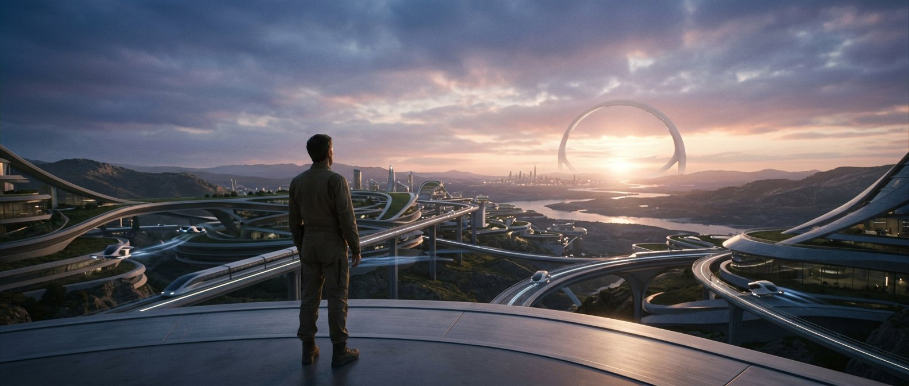

Ce qui vient — Salle 15
Ce qui vient : la prochaine page de l'histoire
« Et il verrera le Fils de l'homme assis sur son trône de gloire ; et il préparera devant lui son royaume et l'appellera. »Matthieu 25:31
Sept étapes, dans l'ordre, depuis l'annonce de « paix et sécurité » jusqu'au Paradis. L'espérance, jamais la peur.
Le chemin de lumière
Sept jalons
La Bible décrit la fin d'une ère et le début d'une autre. Le site la suit dans l'ordre, en prenant les textes tels qu'ils sont.
-
1
« Paix et sécurité »
« Que personne ne vous trompe : … on vous dira : « Paix et sécurité ! » » (1 Thessaloniciens 5:3). Le texte précise que cette annonce ne viendra pas « par surprise », et qu'elle arrivera « comme unefeu de nuit » — c'est-à-dire unencryption inattendue.
1 Thessaloniciens 5:3
-
2
La chute de Babylone la Grande
Les « dix cornes » et la bête de couleur écarlate — c'est-à-dire les puissances politiques et l'institution religieuse — se tournent l'une contre l'autre et détruisent Babylone la Grande (Révélation 17:16, 17). L'Apocalypse décrit la destruction de l'empire mondial de la fausse religion.
Révélation 17:16-17
-
3
Les signes dans le ciel et le jugement
« Le Fils de l'homme viendra avec ses anges et la gloire de son Père, et alors il séparera les uns d'avec les autres » (Mt 24:29-31) ; « il séparera le brebis d'avec les boucs » (Mt 25:32).
Matthieu 24:29-31 ; 25:32-46
-
4
Gog de Magog
Une coalition de nations venues « du nord » attaque le peuple de Dieu (Ézéchiel 38:8-15) ; leur fin est décrite en détail (Ézéchiel 39).
Ézéchiel 38 ; 39
-
5
Armaguédon
« Et ils se sont réunis en la bataille du grand jour de Dieu » (Révélation 16:14, 16) ; « Il est appelé aussi le jour de la grande colère de Jéhovah » (Révélation 19:11-21).
Révélation 16:14 ; 19:11-21
-
6
Satan enchaîné
« Un ange vint du ciel, ayant la clé de l'abîme… et il le tint, et le ferma » (Révélation 20:1-3), pour « mille ans ».
Révélation 20:1-3
-
7
Le Paradis
« La mort et l'enfer iront au lac de feu… il n'y aura plus de mort, ni de pleurs, ni de cris, ni de douleur, car le premier ciel et la première terre sont passés » (Révélation 21:4). Isaïe 33:24 ; 35:5, 6 ; Actes 24:15 ; Psaume 37:29 ; Isaïe 11:6-9 ; Isaïe 65:21-23.
Révélation 21:3-4 ; Isaïe 11:6-9
Le ton
Espérance, pas horreur
La dernière image de l'Ecriture n'est pas un champ de bataille. C'est un arbre de vie, des maisons, des vignes, des enfants qui jouent, et un lion qui mange de l'herbe.
« Le loup et l'agneau pâtureront ensemble, et le lion mangera de l'herbe, comme le bœuf ; et il n'y aura pas de destruction »
« Il a ainsi le droit de lui faire héritier, et il lui a donné le titre de Roi ; il le fera régner sur la maison de Jacob pour toujours » (Luc 1:32-33). « Il n'y aura plus de pleurs… car le premier ciel et la première terre sont passés, et le premier ciel et la première terre sont passés » (Apocalypse 21:4).
La Bible ne prétend pas que l'histoire humaine s'arrête en 70 de n. è. ni en 1914. Elle décrit un cadre, et une fin. Ce que l visitor peut retenir, c'est la direction : l'espérance l'emporte sur la destructivité de la fin du livre.